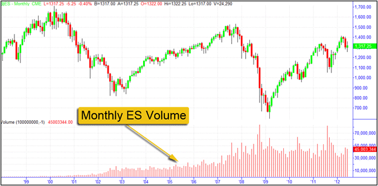
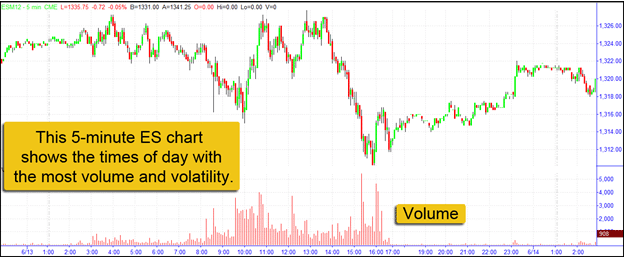
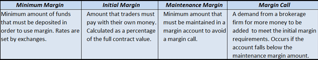
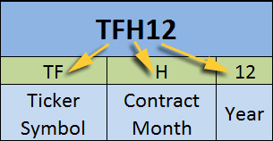
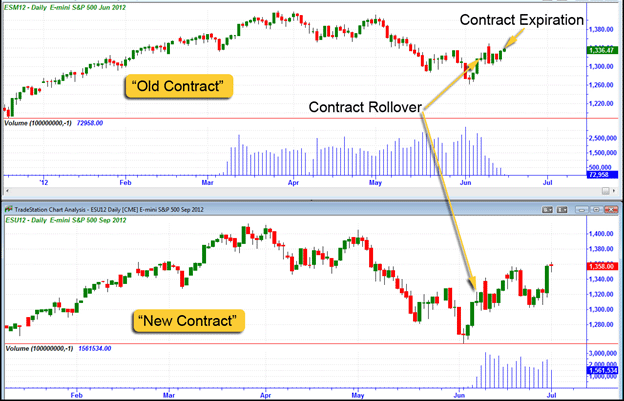
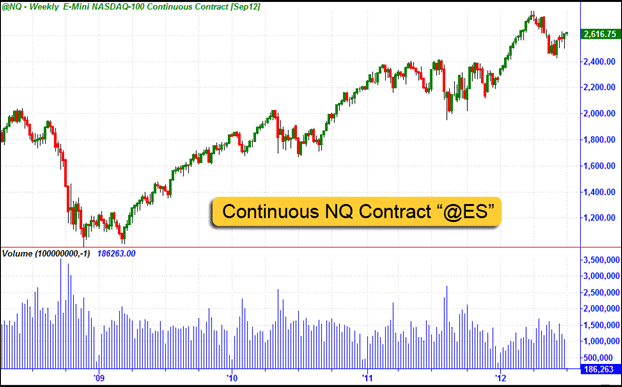
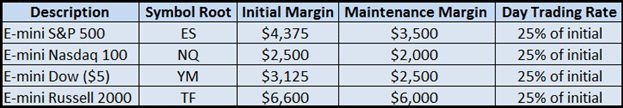
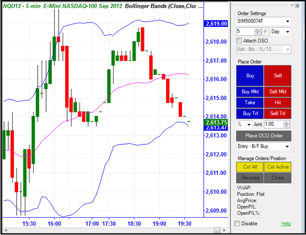

The e-mini stock index futures contracts are among the most popular of the dozens of e-mini products. These contracts are appealing because of their affordability, leverage, liquidity, profit potential and round-the-clock trading. These contracts are typically referred to by their ticker symbols. For example, when discussing the e-mini Russell 2000 futures contract, traders will often simply refer to the contract as "the TF."
E-mini S&P 500 (ES)
The e-mini S&P 500 futures (ES) are the most actively traded stock index futures contract in the world. Introduced by the Chicago Mercantile Exchange (CME) on Sept. 9, 1997, the ES is traded solely electronically on the CME Globex platform. The ES is one-fifth the size of the standard S&P 500 futures contract. The underlying index is the S&P 500 Index - the world's most widely followed gauge of stock market performance. It is a capitalization-weighted and float-adjusted index of 500 large-cap stocks traded on the NYSE, ASE and the Nasdaq National Market System. The Index represents the market value of the total outstanding common shares of the 500 listed companies.Figure 1 shows a monthly chart of the ES with volume; note how the volume has increased greatly since it was first introduced in 1997.
|  |
| Figure 1 - This monthly chart of the e-mini S&P 500 futures contract shows how volume has increased since it was first offered in 1997. Chart created with TradeStation. |
E-mini NASDAQ-100 (NQ)
The e-mini NASDAQ-100 futures (NQ) are also traded on the CME Globex electronic platform. Launched on June 21, 1999, the NQ is one-fifth the size of the standard NASDAQ-100 futures contract. Its underlying index - the NASDAQ-100 Index - represents the largest (based on market capitalization) non-financial U.S. and international issues listed on the Nasdaq Stock Market. The Index's holdings represent a variety of companies in major industry groups including biotechnology, computer hardware and software, retail/wholesale trade and telecommunications.
E-mini Dow (YM)
The e-mini Dow ($5) (YM) is another popular contract that trades solely electronically on the CME Globex platform. Launched on April 5, 2002, the YM is one-fifth the size of the standard Dow futures contract. The YM is based on the blue-chip Dow Jones Industrial Average (DJIA), a price-weighted index of 30 blue-chip U.S. companies. Nine economic sectors are represented in the Index, including consumer goods, entertainments, financial services, retail and technology. The YM is especially attractive to beginner traders, since each tick represents a conservative five dollar price change.
E-mini Russell 2000 (TF)
The e-mini Russell 2000 (TF) is traded on the Intercontinental Exchange (ICE) electronic trading platform. The TF is based on the Russell 2000 Index, a subset of the Russell 3000 Index, is a performance benchmark for the small-cap and mid-cap segment of the U.S. equities markets. The Index includes 2000 of the smallest securities, based on market capitalization. The Russell 2000 Index represents a variety of sectors including, consumer discretionary, financial services, healthcare, producer durables and technology.
Volume refers to the number of shares or contracts that are traded during a specified period of time. The average daily volume is the number of shares or contracts that are traded - on average - during a particular time period. Many of the e-mini futures contracts trade under high volume; the ES leads the pack with over 2.2 million contracts traded on average per day. To traders, strong volume means that there is good liquidity, ensuring that orders will be filled, filled with minimal slippage and filled without substantially affecting price.Volatility, on the other hand, is a measurement of the amount and speed at which price moves up and down. When a trading instrument experiences volatility, it provides opportunities for investors and traders to profit from the change in price - whether rising prices in an uptrend or falling prices during a downtrend. Any change in price creates an opportunity to profit: it is difficult (or impossible) to make a profit if the price remains the same.
A quick look at the relative size of the price bars provides an indication of the degree of volatility. Smaller price bars represent decreased volatility, whereas larger bars are indicative of increased volatility. To accurately measure volatility, traders often apply technical indicators such as Average True Range, Bollinger Bands® and the Chaikin Volatility Indicator. Knowing how much price is expected to move throughout a trading session is important for setting reasonable profit targets and protective stop loss levels. If the average daily price fluctuation in a contract were five points, for example, it might be unrealistic to set a daily profit target of 20 points.
Both volume and volatility are important characteristics of the e-minis since these two factors help create profitable trading opportunities. Since the e-mini stock index futures contracts trade nearly round-the-clock on all-electronic exchanges, these contracts attractive to traders around the world. There are times of the day; however, where increased volume and volatility are present. Figure 2 shows a five-minute chart of the June 2012 ES contract; it is apparent from the chart that the times when both volume and volatility are highest coincide with the regular U.S. stock market trading session. The period from approximately 3:00 am (EST) until the U.S. markets open also has noticeable volume and volatility.
|  |
| Figure 2 - This five-minute ES chart illustrates the times of day that the contract trades with the most volume and volatility. Chart created with TradeStation. |
Margin is essentially a loan that a brokerage firm extends to a client (the trader or investor) that is used for the purchase of trading instruments. Margin trading allows traders and investors to enter larger positions then they would otherwise be able to with a cash account because it provides leverage. This leverage amplifies both wins and losses and, as such, margin should be used with caution and consideration. In addition to the leverage afforded, margin gives traders the ability to sell short. When traders sell short, they are attempting to profit from falling prices. Selling short requires traders to begin a trade by borrowing shares or contracts from a broker (using margin) and then selling them. Traders buy back the shares or contracts (known as "buying to cover") when they wish to close the trade.The concept of margin differs between stock, forex and futures because stock and forex trading involves purchasing something tangible (a part of a company and a foreign currency) and futures trading involves buying or selling a contract whose obligation will be met at a future date. Margin for stock and forex trading is defined as borrowed money, whereas futures margin is considered an initial deposit or an "earnest money" deposit. Margin account holders pay interest on the amount of money used as margin. The margin interest rates vary depending on the current "broker call rate" or "call money rate" and the amount that is borrowed.
Minimum Margin
Brokerage firms require a minimum amount of funds in an account, or minimum margin, for traders to be able to use margin. The minimum margin requirements for futures contracts, known as performance bonds, are set by the exchanges that offer these contracts. These minimums change frequently in response to market activity. The minimum margin requirements change in response to events such as:
Initial Margin
Initial margin is the margin that traders must pay for with their own money when initiating a position. Also known as futures requirement, these rates vary by contract, contract date and brokerage firm. Initial margin is a percentage of the full contract value of a position and is used to ensure that traders have enough cash in their accounts to cover losses.
Maintenance Margin
Maintenance margin is the minimum value that must be maintained in a margin account. As an example, imagine that a trader entered a position to buy (go long) the September 2012 ES when the contract was trading at 1355.00 points. Imagine also that the exchange (CME) required an initial margin of $4,500 to trade the contract, with a maintenance margin of $3,500. If price fluctuations in the ES bring the account balance under $3,500 (the maintenance margin amount) the trader would have to deposit additional funds to bring the account value back to the required initial margin. The potential gains and losses of the position fluctuate every time the settlement price of the contract changes. The final gain or loss is determined when the position is closed or when the contract expires.
SEE: Buying On Margin and Maintenance Margin
Margin Calls
A margin call occurs if the account falls below the maintenance margin amount. A margin call is a demand from the brokerage firm that money be added to a trading account to meet the initial margin requirements. If the demand is not met, the brokerage firm can close out any open positions in order to bring the account back up to the minimum value. The brokerage firm can close the position(s) without notifying the client in advance. Even if the brokerage firm offers the trader time to increase the equity in the account, it can sell off positions without consulting the trader. Traders may be able to avoid a margin call by closing out the losing position(s). Important terminology regarding margin are shown in Figure 3.
|  |
| Figure 3 - Various margin terms. |
Pattern Day Traders
Although futures traders are not subject to FINRA's Pattern Day Trading rule (which requires a minimum account size of $25,000), day traders may have different margin requirements than traditional overnight traders. If a broker-dealer identifies a client as a "pattern day trader" (anyone who executes four or more day trades within five business days), the broker-dealer may enforce special margin requirements on the client's day trading account(s).
Margin Trading Risks
Trading with margin involves a number of risks. The Financial Industry Regulatory Authority lists the followings risks of which traders and investors should be aware:
SEE: Margin Trading: The Risks
A contract month is the month in which a futures contract expires. All of the e-mini stock index futures contracts trade on the March quarterly expiration cycle (March, June, September and December). Each month is represented by a single letter:
|  |
| Figure 4 - Each futures contract is known by its ticker symbol, contract month and year in which the contract is traded. |
E-mini contracts are similar to other futures contracts in that they have a defined length and specified expiration. The e-mini stock index futures expires at the same time and to the same price as their larger counterpart contracts (for example, the e-mini S&P 500 contract expires at the same time as the standard, full-sized S&P 500 contract). The expiration date (or final trading day) is the last day that a futures contract is valid. Since futures contracts have delivery months (or contract months, such as H, M, U and Z), the expiration is the time and the day that the particular contract stops trading. The final settlement price for the contract is also determined. Expiration for the e-minis stock index futures contracts (including ES, NQ, YM and TF) occurs at 9:30 am EST on the third Friday of the delivery months, such as the third Friday in March for a March contract, or the third Friday in December for a December contract.
When a contract expires, it does not expire worthless (like an options contract would). Instead, an open position rolls over to the new contract.
Rollover
Contract Rollover occurs on the Thursday a week before the expiration Friday - for the e-minis, this is the second Thursday of March, June, September and December (if the Rollover month starts on a Friday, the Rollover is the first Thursday of the month). The next contract becomes the "lead contract" or the "front month". Even though the previous contract continues to trade until expiration, the majority of trading moves to the next contract. For example, if the TFU12 contract expires on September 21, the rollover date would be the previous Thursday, or September 13, in this case. The majority of trading would switch to the December contract (TFZ12) as of market open (9:30 am EST) on the rollover date.
Figure 5 illustrates the increase in volume that switches to the next contract as of the Rollover date. In the example, the June and September ES contracts are shown. The Rollover (June 7) date is indicated by the yellow arrows, along with the June contract's expiration. Notice the increase in volume for the September contract that coincides with the Rollover date. Trading for the June contract ceases as of the expiration.
|  |
| Figure 5 - These daily charts show the June and September 2012 ES contracts. The Rollover (June 7) dates are indicated by the yellow arrows, along with the June contract\'s expiration. Notice the increase in volume for the September contract that coincides with the Rollover date. Chart created with TradeStation. |
Trading the Contract Rollover
Many active traders will trade the "old" contract on Rollover day, and then switch to the "new" contract on the next day, or make the switch on the actual Rollover day. Figure 5 shows that after Rollover, the volume of the current contract (June) wanes, while the volume of the upcoming contract (September) increases. In general, traders should move into the new contract as volume moves from one to the other.Some traders avoid Rollover day altogether because it is considered by many to be choppy and challenging to trade. It is important to do your own homework and research to determine if your trading strategy is affected by Rollover trading.
Continuous Contracts
The continuous contract is a combination of the various delivery months of a contract. It allows traders and investors to view the historical price movement (and historical technical analysis) over multiple contracts. The continuous contract is vital to strategy development and backtesting, since it accounts for years of trading data. Often, the symbol for the continuous contract is the contract's ticker symbol, preceded by the "@" symbol. The continuous NQ contract, for example, would be designated "@NQ."
Figure 6 shows a weekly chart of the continuous NQ contract. Notice that the chart appears as seamless as that of a regular stock chart. Typically, the continuous contract is used for analysis purposes only and not for actual trading.
SEE: Backtesting: Interpreting The Past
|  |
| Figure 6 - The continuous NQ contract, shown on a weekly chart. |
In order to trade any of the e-mini futures contracts, one must have an account with a brokerage firm that offers e-mini products. Since the e-mini stock index futures contracts discussed in this tutorial are, in fact, futures contracts, a futures account is necessary. This account will be separate from other account types (such as accounts for trading stocks or Forex). Many traders have multiple accounts so that they are able to participate in various markets.When researching and selecting from among the dozens of brokerage firms that offer e-mini trading, it is important to take into consideration the following factors.
Regulation
The National Futures Association (NFA) is the self-regulatory organization for the U.S. futures industry that develops rules, programs and services to maintain market integrity, protect investors and help NFA members meet regulatory responsibilities. The NFA regulates every firm or individual who conducts futures trading business with public customers.
Traders and investors can check the registration status and disciplinary history of any futures firm or individual by searching on the NFA Web site (www.nfa.futures.org). Searches can be executed based on NFA ID Number, Firm Name, Individual Name and Pool Name (for commodity pools only).
The Federal Reserve Board, FINRA and securities exchanges regulate margin trading.
Fees and Commissions
While fees and commissions do change from time to time, an up-to-date list can be found on any reputable broker's Web site (the sites will also list pertinent initial margin and maintenance margin rates). Futures commissions are charged on a per side, per contract basis. For example, if a trader enters a long ES position with five contracts, the commission will be based on the trade entry (one side) multiplied by the five contracts. An additional commission will be assessed when the trade is closed (the "other" side of the trade). Often, commissions are on a sliding scale depending on the number of monthly contracts that are traded. In general, the more contracts that are traded each month, the lower the commission rates will be for each contract.
In addition to commissions, traders must also take into consideration (and pay) exchange execution and clearing fees. These vary by market and instrument, and by the trader's exchange membership level. Exchange fees for the ES and NQ, for example, are $1.14 per side, per contract, with an additional NFA Regulatory Fee of 2 cents per contract for non-members (current as of July 1, 2012).
Margin Requirements
A brokerage firm's margin rates will also be listed on its website. As discussed in the "Margin" section of this tutorial, margin rates are set by the exchanges but can be tightened by individual brokerage firms. In other words, a firm can require more stringent margin rules, but can never allow more relaxed rates than those set by the exchanges. Like the exchange requirements, brokerage requirements can change from time to time and without notice.
Figure 7 shows a spreadsheet with TradeStation's margin requirements (current as of July 1, 2012 and subject to change). The figure is included to provide an example of the various margin rates for different e-mini products.
|  |
| Figure 7 - TradeStation margin requirements for the ES, NQ, YM and TF contracts (current as of July 1, 2012 and subject to change). |
Trading Platform
Most, if not all, brokerage firms that offer e-mini trading provide clients with access to a trading platform. The trading platform is the trader's portal to the markets and typically provides real-time charting, technical and fundamental analysis tools, and an order-entry interface. A well-designed trading platform will be easy to use, visually pleasing, and will have the ability to be customized in terms of layout and colors. In addition, and of particular importance to active traders, a good trading platform will have clear 'buy' and 'sell' buttons that allow for easy order entry. This is vital to avoiding costly order-entry mistakes (commonly referred to as "pilot error").Figure 8 shows an example of a robust trading platform that provides technical analysis tools and a variety of easy-to-use order-entry interfaces. In this example, a Chart Trader order entry interface allows traders to place buy and sell orders directly from the chart.
|  |
| Figure 8 - This 5-minute chart of the NQU12 contract illustrates a trading platform that offers technical analysis tools as well as an easy-to-use order entry interface. Chart created with TradeStation. |
Advanced features, such as the ability to backtest or create custom trading strategies that can be auto-traded, may also be important factors depending on the trader's specific needs.Most brokers offer free demo accounts that allow traders to experiment with the platform before opening and funding an account. In addition, many provide "simulated" accounts - hypothetical accounts with which the trader can conduct "paper" trades without risking real money in a live market.
Trade Execution Quality
Certain brokers list monthly statistics regarding trade execution quality and speed. Reliable and fast execution is paramount to achieving the best prices on trade entries and exits. Since some brokers boast fast execution speeds for institutional clients only, it is important for individual traders to determine the type of execution quality they can expect from a particular broker. When researching execution speeds, read the fine print: statistics should be provided by independent, third-party vendors that are not affiliated with the particular brokerage firm.
Futures contracts are taxed at different rates than stocks, bonds, ETFs and mutual funds. In some cases, trading e-mini stock index futures may result in more favorable tax treatment than other trading instruments. Like other futures contracts, the e-mini stock index futures contracts (including ES, NQ, YM and TF) generally fall under Section 1256 of the U.S. tax code, and gains and losses are marked-to-market at the end of each tax year. Marked-to-market means that all realized and un-realized gains and losses are reported. Futures contracts fall under the 60/40 rule, where 60% of gains are treated as long-term capital gains and 40% are treated as short-term capital gains (ordinary income) - regardless of the actual length of the holding period. For active traders, this can result in tax savings. Currently, the maximum long-term capital gains tax rate is 15% and the maximum short-term capital gains tax rate is 35%. With the 60/40 rules, futures traders can achieve a net maximum blended tax rate of 23%. Depending on the tax payer's tax bracket, this figure can be lower. For example, assume a trader makes $50,000 in one year trading the ES. $30,000 will be taxed at the lower, long-term capital gains rate, and $20,000 will be taxed at the higher, short-term capital gains rate:
| $30,000 X 15% = $4,500 (60% at long-term capital gains rate)
$20,000 X 35% = $7,000 (40% at short-term capital gains rate) $4,500 + $7,000 = $11,500 (23% of $50,000) |
If, on the other hand, the $50,000 the trader made in one year was made trading stocks, the entire amount would be taxed at the higher, short-term capital gains tax rate:
| $50,000 X 35% = $17,500 |
The difference between the short-term capital gains and the Section 1256 contracts (in this example, the ES) is $6,000, a substantial tax savings.
When trading stocks, by comparison, 100% of gains are taxed at the short-term gains tax rate if the positions are held for less than one year. The favorable tax treatment for futures traders is one reason why active traders enter the futures market rather than the stock market.
Another advantage with trading futures is the ease of year-end filing. At the end of each year, futures brokers send each futures client a 1099-B form. This tax form shows the net result of all trading - not each individual trade. This number is entered on the tax return (compared with stock trades where each individual trade must be entered). Even though most futures trading is exempt from detailed transaction reporting, it is prudent to keep well-maintained and accurate records of all trading activity in case of an audit.
Taxes are complicated and the rules change frequently. It is important to consult with a qualified tax attorney or accountant for up-to-date information and advice that is applicable to each trader's situation.
The Bottom Line
The e-minis are the small but mighty cousins of their larger, full-sized contracts. Popular among individual and institutional traders alike, the e-minis offer substantial volume and volatility, both of which help set the stage for profitable trading opportunities. Most futures brokers offer competitive pricing structures and robust trading platforms with which to perform market analysis and enter trades. The e-minis are traded using margin, giving traders the ability to enter positions they would otherwise be able to with cash account. In addition, since the e-minis are futures contracts, they are subject to favorable tax treatment.
{kind=link}
{kind=link}
{kind=link}
{kind=link}
{kind=link}
{kind=link}
{kind=link}
{kind=link}